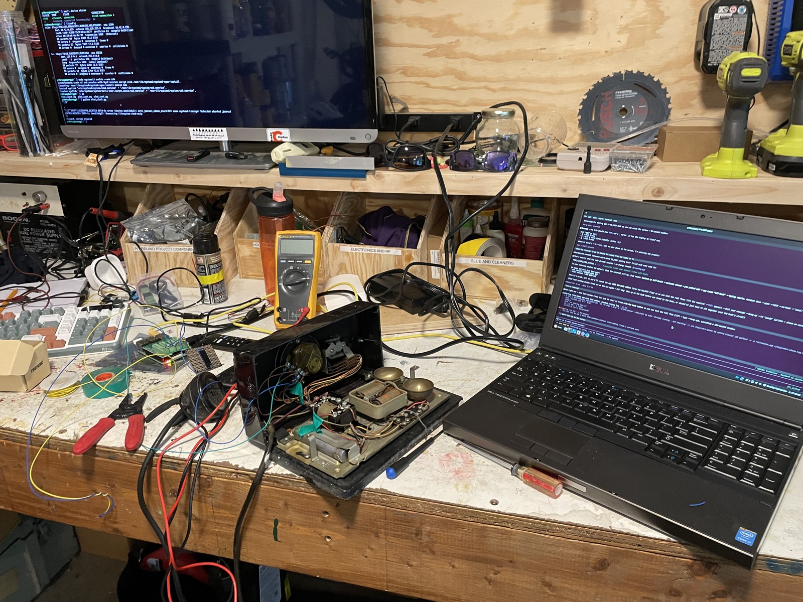

01
Cracking it open
Decoding the dial
First job: figure out how the rotary dial actually talks. The line sits normally closed and opens once per number, so a 1 is one pulse and a 9 is nine. I opened the phone up and wrote a little script to read those pulses and turn them back into digits.